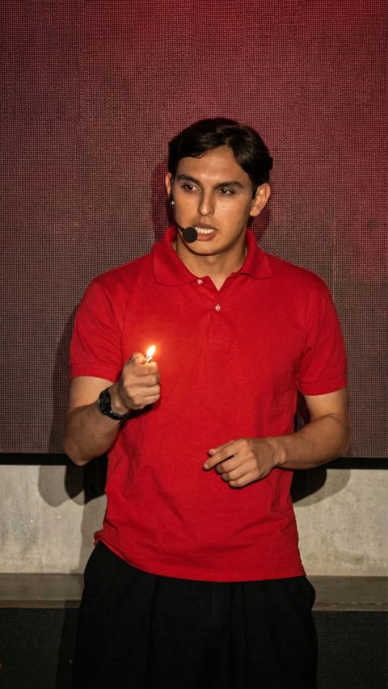
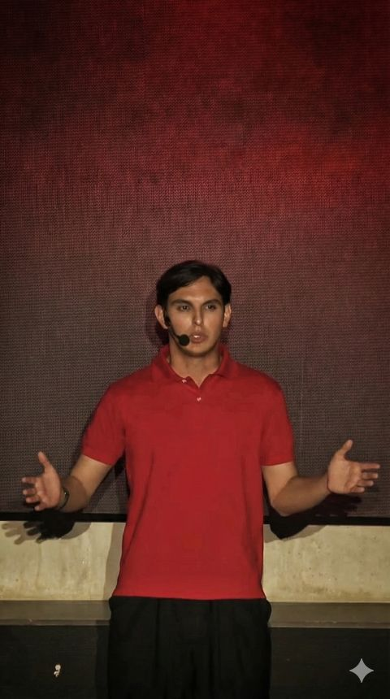
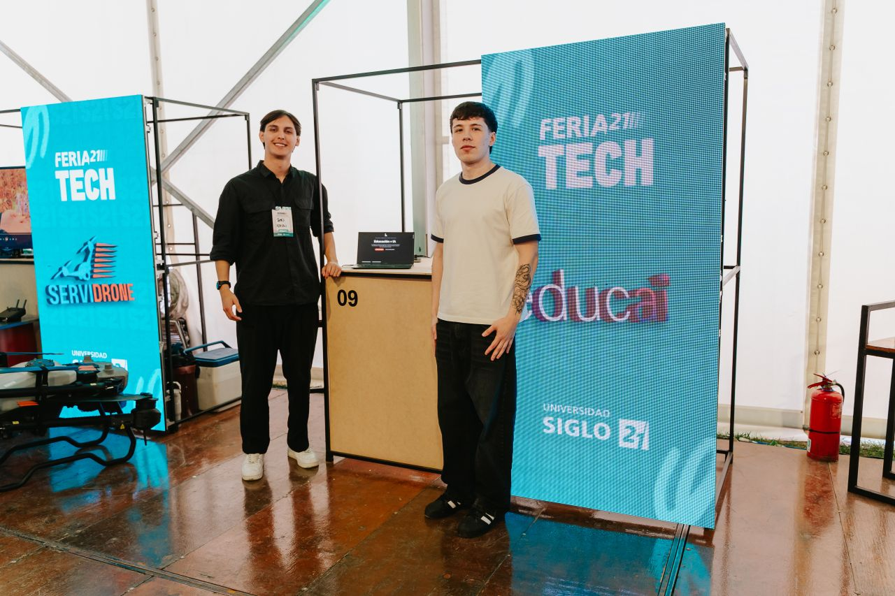
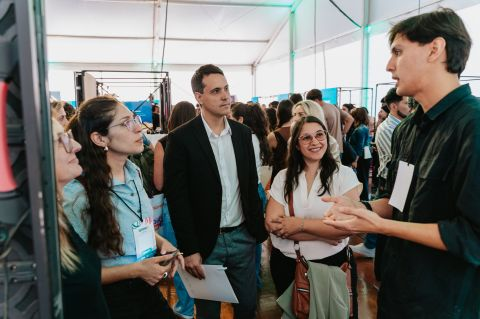
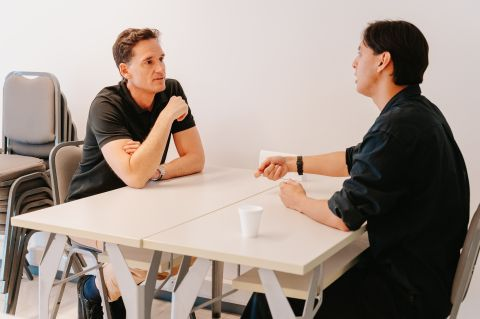

Quién soy
Soy hijo y nieto de docentes. Vivo la educación desde adentro y construyo experiencias para que el aula tenga lo que el celular no te da.

Perspectiva
Mi pregunta guía es esta: «Si puedo aprender en casa, ¿para qué ir a clase?». Hoy creo que una clase tiene que darte algo más difícil de conseguir que una buena explicación: la pregunta que te daba vergüenza hacer, la discusión con alguien que piensa distinto, un desafío que no podés resolver solo.
Por eso diseño productos y experiencias para potenciar el aprendizaje dentro y fuera del aula. Si queremos mejores ingenieros, médicos y profesionales, tenemos que cuidar a quienes los forman.
Una idea educativa vale lo que aguanta cuando la usa otra persona. Prefiero diseñar pruebas chicas que me obliguen a cambiar de opinión antes que enamorarme de la explicación perfecta.
Proyectos
Uno para estudiantes y otro para docentes. Los dos buscan que el aula tenga lo que el celular no te da.
Comunidad I+D · Estudiantes
Una comunidad de estudiantes que pone en práctica lo que aprende resolviendo problemas reales de empresas locales a través de Innovatones, con equipos multidisciplinarios y tiempo limitado.
Startup ed-tech · Docentes
Los estudiantes estudian con un tutor de IA basado en los materiales de la materia, y el docente ve patrones del grupo sobre qué preguntas se repiten para decidir qué hacer en clase.
Conocer el producto →Exposiciones
Charla TEDx · 6 de noviembre de 2025
Una charla en TEDxUniversidad Siglo 21 sobre el futuro del aprendizaje, la transformación del aula y el desafío de crear experiencias educativas que motiven y vayan más allá de transmitir contenidos.

Presenté Educai en Feria21 Tech 2025, en la Universidad Siglo 21, en el congreso Innova Educa 21 y en una sesión de Meet the mentors con mentores de Endeavor.



Entrevista · 4 de junio de 2025
Una reflexión sobre la comunicación entre agentes de IA, a partir de una entrevista en La Gaceta.
Contacto
Quiero hablar con más docentes, responsables académicos y founders que construyen experiencias de aprendizaje. Si das clases en una institución privada y querés incorporar Educai en tu cátedra, escribime.